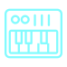

El motor de predicción
El sistema combina el texto, el MIDI y el audio para calcular y decidir nota por nota qué es lo que musicalmente "debería" seguir.

Próxima nota - Ejemplo
Do
Mi
Sol
Si
62%
21%
12%
5%
Elige la más probable o se anima a otra.
 GIRÁ LA PERILLA: CAMBIÁ DE CANAL Y SEGUÍ
GIRÁ LA PERILLA: CAMBIÁ DE CANAL Y SEGUÍ